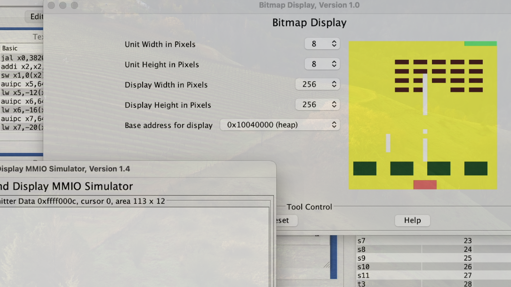

Room Exploration Game
This project is part of the Object Oriented Programming course of the fourth semester. The implementation was carried out in Java, with the creation of the graphical interface carried out in Swing.
This project is part of the Object Oriented Programming course of the fourth semester. The implementation was carried out in Java, with the creation of the graphical interface carried out in Swing.

An official (fake) website designed for Hogwarts - School of Witchcraft and Wizardry in Harry Potter. The project is part of the Web Programming course of the fourth semester.

A simpler version of the original Space Invader game with some changes to the rules. The project is created in RISC-V assembler (source code .s or .asm) and executed using the rars1_6 simulator.
A traditional terminal-based sokoban game using langage C. Players control the game by pressing specific keys on the keyboard.
Course project of Data structures and algorithms II. As part of a tool to aid criminal investigations, we propose modeling relationships between entities using a relational information graph.
Recording driving trips, searching record history, and drawing various charts based on the data, allowing user to intuitively view their driving skills. Using GPS positioning to automatically record and calculate user's driving distance in real-time.